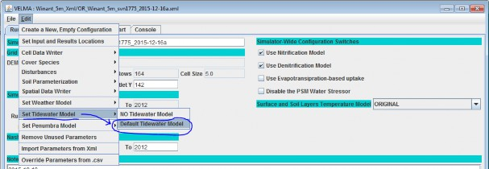
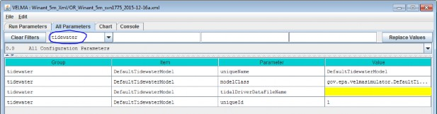

D.10 | Default Tidewater Model Configuration
Overview (Tutorial D.10 - Default Tidewater Model Configuration)
This document describes how to configure VELMA's Tidewater model for simulating the per cell daily amount of tidewater (millimeters of water) and marine nitrogen infiltration (grams nitrogen / meter2) for coastal watershed applications.
Warning: This model is still under early development. The functionality described here is likely to change or at least be modified in the future.
The Default Tidewater Model provides a way to mimic water and nitrogen deposition due to tidal
overtopping of cells within a VELMA simulation's delineated watershed. The model is currently very
simple, and subject to development changes.
You Must Explicitly Set the Tidewater Model for use by a simulation configuration.
In the VELMA GUI click Edit --> "Set Tidewater Model" --> "Default Tidewater Model") as shown below:
Note the "NO Tidewater Model" menu option - clicking it removes the Default Tidewater Model from your simulation configuration.
After click-setting the Default Tidewater Model, the VELMA GUI should shift your view to the model's parameters in the "All Parameters" tab:
Notice that the Group selector has "tidewater" selected; you can always return the parameters table to display only tidewater parameters by clicking "Clear Filters" and then selecting "tidewater" in the drop- down list of the Group selector.
You Must Provide the Default Tidewater Model with a Driver Data File
The Default Tidewater Model needs daily values for the following data:
- Highest High Tide Elevation (for the 24-hour period of the day, in meters)
- Lowest Low Tide elevation (for the 24-hour period of the day, in meters)
- Seawater NO3 Concentration Coefficient (in micro-mols N / liter)
- Seawater NH4 Concentration Coefficient (in micro-mols N / liter)
- Seawater DON Concentration Coefficient (in micro-mols N / liter)
Set the name of the tidalDriverDataFileName to the name of a file that provides the above values. The name (or fully-qualified path + name) you provide must be a file of comma-separated values (.csv).
when presented with a file name without a path, the VELMA simulation engine's initialization code will assume the file is located in the directory specified by the inputDataLocationRootName/inputDataLocationDirName path.
Each row of the .csv file specifies one day's worth of tidewater driver data in the following field layout:
YEAR, JDAY, HIGH_TIDE, LOW_TIDE, NO3_K, NH4_K, DON_K
The year and jday fields must be integers, and the year field must be a full four-digit year.
VELMA assumes that first row in the file will have YEAR = forcing_start and JDAY = 1, and that the last row in the file will have YEAR = forcing_end and JDAY = 365 (or 366 if forcing_end is a leap year).
VELMA further assumes that there will be rows of data for every YEAR, JDAY combination in-between. That is, there can be no missing days in the driver data file.
The YEAR, JDAY, HIGH_TIDE and LOW_TIDE values are all required, but any or all of the nitrogen concentration coefficients are optional and may be left blank. Any nitrogen concentration coefficient value left blank defaults to a value of zero.
Here are the first four rows of a tidalDriverDataFileName .csv driver file as an example:
| YEAR, | JDAY, | HIGH_TIDE, | LOW_TIDE, | NO3_K, NH4_K, DON_K |
| 2008, | 1, | 2.1858504, | 0.38152240, | 7.0, 5.0, 3.0 |
| 2008, | 2, | 2.3199558, | 0.36018744, | 7.0, 5.0, 3.0 |
| 2008, | 3, | 2.5942624, | 0.40285736, | 7.0, 5.0, 3.0 |
| 2008, | 4, | 2.8990475, | 0.60096769, | 7.0, 5.0, 3.0 |
Note that in the above example, whitespace has been introduced after the comma-separators to make the fields easier to identify. In practice, such whitespace is not required and not encouraged.
The example above contains a header row, which is acceptable but not required. However, if the header row is present, it must start with an alphabet character, not a numeral.
The Default Tidewater Model's Tidewater and Nitrogen Infiltration Amounts are Reported by Cell and Spatial Data Writers
When a DefaultTidewaterModel is part of a simulation configuration, any cell data writers specified automatically include columns reporting the following daily amounts for its specified cell location:
- Tidewater Added (in millimeters of water)
- NO3-infiltration (in grams nitrogen / meter2)
- NH4-infiltration (in grams nitrogen / meter2)
- DON-infiltration (in grams nitrogen / meter2)
Spatial Data Writers may be configured for the following Spatial Data keywords:
- Tidewater
- TidalNo3Infiltration
- TidalDonInfiltration
- TidalNh4Infiltration
- TotalTidalNInfiltration
Configure Spatial Data Writers with the keywords exactly as shown above (the mixed case must also be exact).
The Tidewater values reported in spatial data represent amounts of water (in millimeters) added "as if" they were part of the cell's rainfall on the given day.
All the nitrogen infiltration values reported in Spatial Data output files specified by the above keywords are in units of grams nitrogen / meter2 and represent amounts added at each cell in the map by the specific nitrogen infiltration type. The TotalTidalNInfiltration values are the sum (NO3 + NH4 + DON) of the cells nitrogen infiltration addition for the day.
A simulation configuration that includes Spatial Data Writer parameterizations for any of the above, but does not include the DefaultTidewaterModel parameterization should not crash, but all any spatial data based on the DefaultTidewaterModel will be all zeros.
A Summary Description of the Default Tidewater Model's Behavior and Effects
When a DefaultTidewaterModel is set for a simulation configuration, and provided with valid parameters from the tidal driver data file, the daily water balance code asks the tidewater model instance for a tidewater amount for each cell whose elevation falls below the HIGH_TIDE value for that day, and adds the (zero or more millimeters) resulting tidewater amount to the cell's total rain amount for that day. The tidewater amount added is simply:
Tidewater amount = (HIGH_TIDE * 1000) - (cell elevation * 1000)The multiplication by 1000 converts meters to millimeters.
After water balance computes tidewater amounts, the plant soil model (Psm4dLsr) code asks the tidewater model for the NO3, NH4 and DON infiltration amounts of every cell. Cells with zero tidewater addition automatically receive zero infiltration amounts, and all cells will receive zero infiltration (regardless of their day's tidewater amount) for any concentration coefficient that was zero (either
explicitly or through omission of the concentration constant from the file) in the driver data for that day.
Cells with tidewater amounts > zero, and with non-zero infiltration have their nitrogen infiltration computed as:
n-infiltration amount = (concentration coefficient * 0.000014) * tidewater amountThe conversion factor of 0.000014 converts from the coefficient's units of micro-mols/liter to grams/meter2.
Each of the three tidal infiltration amounts is computed by the equation above, but the amounts are assigned to different pools within VELMA.
- The NO3 infiltration amount is added to the NO3 pool's layer 1 amount.
- The NH4 infiltration amount is added to the NH4 pool's layer 1 amount.
- The DON infiltration amount is added to the DON pool's layer 1 amount.
The amounts are added to their respective data pools prior to any daily nitrification and denitrification calculations. For example, the NO3 amount is added to the pool prior to denitrification, so the cell's layer 1 denitrification amount for the day will be computed from the NO3 pool's original amount + its tidal infiltration amount.